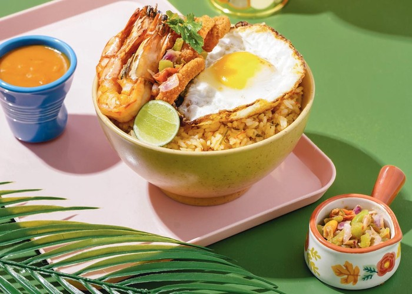

Kuliner Indonesia yang Mendunia
Indonesia merupakan negara dengan ragam budaya yang sangat kaya. Mulai adat istiadat, bahasa daerah, makanan,
hingga minuman. Makanan Indonesia terkenal dengan aneka olahan rempah-rempah dan beberapa sudah terkenal di
dunia akan kelezatan rasanya. Berikut dipaparkan makanan khas Indonesia yang namanya sudah mendunia dan sangat
disukai oleh warga negara asing.
1. Rendang
Rendang adalah masakan yang berbahan dasar daging dengan menggunakan campuran bumbu dan rempah-rempah.
Masakan
ini dihasilkan dari proses memasak yang dipanaskan berulang-ulang dengan santan kelapa. Proses memasaknya
sekitar empat jam hingga kering dan berwarna coklat pekat.
Cara memasak rendang diawali dengan menghaluskan bahan-bahan yang terdiri atas bawang merah, bawang putih,
cabai merah, kemiri, jinten, ketumbar, kunyit, jahe, dan garam. Bumbu halus tersebut ditumis dengan minyak
panas. Kemudian ditambahkan daun kunyit, daun jeruk, dan serai hingga harum. Daging dan santan kental
dimasukkan dan dimasak hingga berubah warna kecoklatan.
Rendang berasal dari Minangkabau. Di daerah Minangkabau rendang disajikan dalam berbagai upacara adat dan
perhelatan istimewa. Rendang dapat ditemukan di rumah makan padang di seluruh Indonesia dan sudah terkenal di
mancanegara.
Pada tahun 2011, rendang dinobatkan sebagai hidangan peringkat pertama daftar World’s 50 Most Delicious Food
(50 Hidangan Terlezat Dunia) yang digelar oleh CNN International.
2. Nasi Goreng
Nasi goreng terbuat dari nasi yang digoreng dengan minyak goreng, ditambah bumbu bawang merah, bawang putih,
lada, cabai, dan kecap manis. Sebagai pelengkap biasanya ditambahkan telur, ayam, udang, sayuran, dan kerupuk.
Membuat nasi goreng tidaklah sulit, pertama panaskan minyak. Tumis bawang merah dan bawang putih hingga harum.
Kemudian nasi dimasukkan, ditambah lada dan kecap secukupnya. Lebih nikmat dan sehat apabila dihidangkan
dengan pelengkap seperti telur, ayam, udang, dan sayuran.
Nasi goreng dapat dinikmati oleh semua orang, tidak mengenal kelas sosial, bahkan turis mancanegara sekalipun.
Biasanya nasi goreng dijual di warung tepi jalan, gerobak penjaja keliling, hingga restoran, dan acara
prasmanan dalam pesta.
Source : Cinta
Kuliner Indonesia